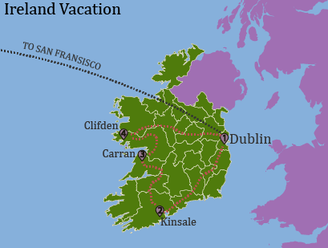

Lab 1
{kind=link}
Nick Perdue's Summer Vacation to Ireland
This map shows the airplane route (in black) and the car route (in red). Download Image
I am a junior at Humboldt State University majoring in Geography with an emphasis/minor in Geospatial Sciences. These are examples of my cartographic work.
This map shows the airplane route (in black) and the car route (in red). Download Image
This is a simple states and capitols map, ideally used for elementary school students. Download Image
I chose twenty National Parks to feature on this map amongst other physical features. Download Image
This map shows cherry trees in relation to schools in Portland
(there is no relationship between the two).
This map shows all the breweries between Fortuna and Mckinleyville in Humboldt County. Download Image
This map includes river/stream names, picnic areas, camping/backpacking sites, and mountain peaks/ridges/craters, and more in Crater Lake National Park . Download Image
This map shows the Red and Gold transit routes; the stops are color coded and stops that share a route are indicated with half circles for the routes. Numbers are used for the order of the routes which correspond to numbers in the legends. Download Image
This map shows the voting patterns by county of the 2016 US presidential election . Download Image
Describe some aspects of the map here. Download Image

Describe some aspects of the map here. Download Image
This map is based off landmarks/checkpoints from the old Oregon Trail Video Game. I included screenshots from the game as well as historical paintings and pictures.
{kind=link}
{kind=link}
{kind=link}
{kind=link}
{kind=link}
{kind=link}
{kind=link}
{kind=link}